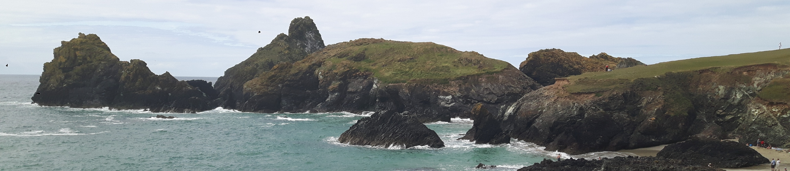

Home
About
Projects
Contact
Pip Simpson Research
Why measure pollution in ocean and natural waters?

There are a variety of reasons research into chemical pollution is key.
These include:
🦦 Reason 1
🦦 Reason 2
🦦 Reason 3
🦦 Reason 4